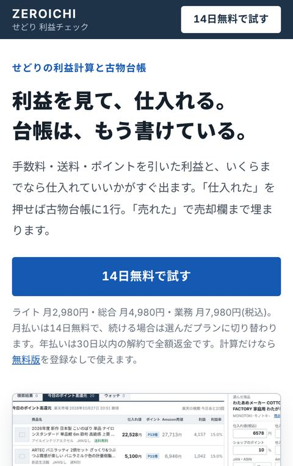

- 業務アプリ
- 定期課金
- GAS
- 運用中
せどり番頭せどりの利益計算・古物台帳・帳簿
仕入れる前に、手数料・送料・ポイントを引いた利益が出ます。「仕入れた」を押せば古物台帳に1行入り、「売れた」で売却の欄まで埋まります。
- 使う人
- 楽天・Yahoo!・オークションで仕入れて、Amazon・メルカリで売る個人の古物商
- 作ったもの
- 5つの仕入れルートの計算ページ/端末とクラウドの台帳の同期/売上の取り込み・経費・月ごとの利益・棚卸・申告用の数字/ログインと月払い・年払いの定期課金(カード決済とPayPal)/解約・一時停止・プラン変更の画面/お知らせメールの送信(Google Apps Scriptで事業用のGmailから)
- 気をつけたこと
- 特定商取引法の最終確認の表示を、申し込みのボタンと同じ画面に置きました。解約はマイページの1画面で終わります。計算と台帳の同期は、自動の検算(400件以上)を通してから公開しています。